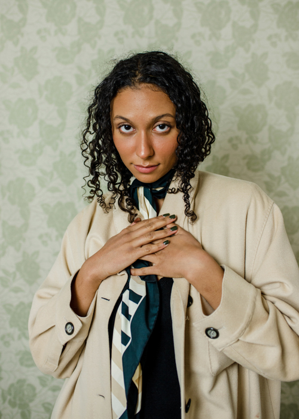
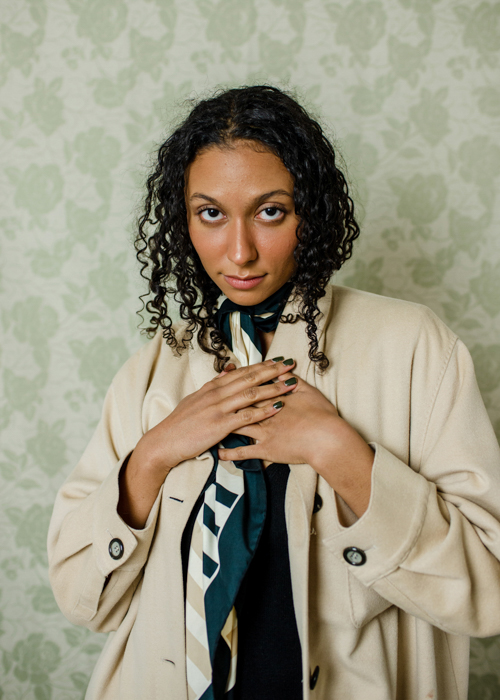

Adri Tan
Fashioning a Sense of Self, Issue 1, is an attempt to reclaim and explore the identities of women and non-binary people of color through photography. The images portray young women and non-binary people of color in spaces recognizant of their style and complementary to the forms created by their clothes and bodies. The project began with an all-inclusive, open invitation by which the models themselves were to decide the extent to which they would participate and how they would dress. In this way, these models of color maintained autonomy and agency over the way they are depicted.
The project is accompanied by a zine that further examines the themes of this project through brief interviews with the participants on their relationship to style and fashion.


Fashioning a Sense of Self, Issue 2, is an attempt to reclaim and explore the identities of women and non-binary people of color through photography. The images portray young women and non-binary people of color in spaces recognizant of their style and complementary to the forms created by their clothes and bodies. The project began with an all-inclusive, open invitation by which the models themselves were to decide the extent to which they would participate and how they would dress. In this way, these models of color maintained autonomy and agency over the way they are depicted.
Each portrait was the product of an organic, collaborative experience. Over time, and even through the Covid-19 pandemic, a community of diverse individuals emerged, challenging the white-washed fashion media industry that continues to benefit from the oppression and exclusion of non-white bodies.
The zine accompaniment is not yet available online.


 



I Objectify Myself to Subvert Your Gaze confronts the sexual objectification and fetishization of East and Southeast Asian people. In response to my experiences at the intersection of racism and misogyny as a non-binary Malaysian-Chinese American, I design my own method of objectification to circumvent the gaze of the oppressor in the form of digital textiles.
This zine contains photographs of East and Southeast Asian participants of marginalized genders digitally manipulated into abstract, sometimes kaleidoscopic, patterns until the original body cannot be distinguished nor sexualized.
These textile designs serve as a mediator between the participants and the audience—In objectifying themselves first, they reclaim power over the perception of their own body and identity. Participants are encouraged to move freely during the photo sessions, exploring the lines and shapes of their limbs that make up each pose rather than focusing on how their body will look and be perceived under anyone’s gaze.


(Website under construction)
email: tan.adrianna@gmail.com
ig: @atangerinee